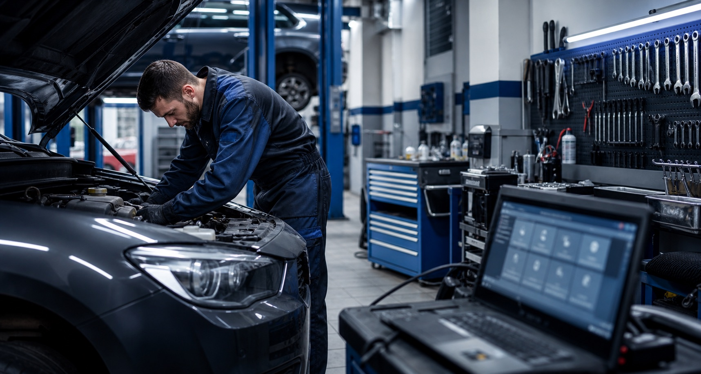

Reglaj direcție Oradea
Verificare și reglaj geometrie roți pentru stabilitate, direcție corectă și uzură uniformă a anvelopelor.
Află mai multeDiagnoză computerizată, mecanică auto, electrică auto, reglaj direcție, reparații pentru sistemul de climatizare și întreținere completă pentru autoturismul tău.

Servicii auto clare, lucrări corecte și programare rapidă pentru autoturismul tău.
Diagnoză computerizată pentru identificarea rapidă și corectă a problemelor autoturismului.
DetaliiReparații mecanice și lucrări de întreținere realizate corect pentru autoturisme multimarcă.
DetaliiVerificări și reparații electrice pentru senzori, sisteme moderne și probleme de funcționare..
DetaliiVerificare și reglaj geometrie roți pentru stabilitate, siguranță și uzură uniformă a anvelopelor.
DetaliiÎncărcare freon și verificare sistem climatizare pentru funcționare eficientă..
DetaliiDiagnostic și reparații pentru sistemul de climatizare auto, cu verificare tehnică înainte de intervenție.
DetaliiVerificare și reparații injectoare pentru sistemul de injecție, cu experiență Diesel Point.
DetaliiLucrări de tinichigerie și vopsitorie auto realizate curat, atent și profesionist.
DetaliiServicii esențiale pentru drumuri sigure, confort la volan și deplasări fără griji.
Verificare și reglaj geometrie roți pentru stabilitate, direcție corectă și uzură uniformă a anvelopelor.
Află mai multeVerificare sistem climatizare, control presiune și încărcare freon pentru confort în orice sezon.
Află mai multePentru clienții care caută un service auto autorizat R.A.R. în Oradea, cu personal calificat, echipamente moderne și lucrări realizate corect.
Motorpext este un service auto autorizat R.A.R. din Oradea, cu activitate din 1994. Oferim servicii de diagnoză, reparații și întreținere auto pentru clienți care caută lucrări corecte, comunicare clară și soluții potrivite pentru autoturismul lor.
Sună-ne și programează rapid o vizită la service.
Contactează-ne pentru detalii, disponibilitate și programare la service-ul Motorpext din Oradea.